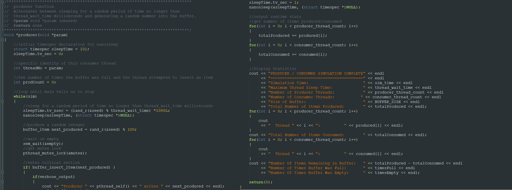

A multithreaded C++11 solution to the classic producer-consumer problem.

An arbitrary number of producer threads place random numbers into a bounded buffer, and an arbitrary number of consumer threads remove items from the buffer, determining whether each number is prime.
Initially intended as a simple example of the difficulties involved with the producer/consumer problem, this quickly became a pet project to develop a solution that runs correctly even with infinitely unbalanced numbers of producers and consumers.
Written in C++11 for Unix systems.